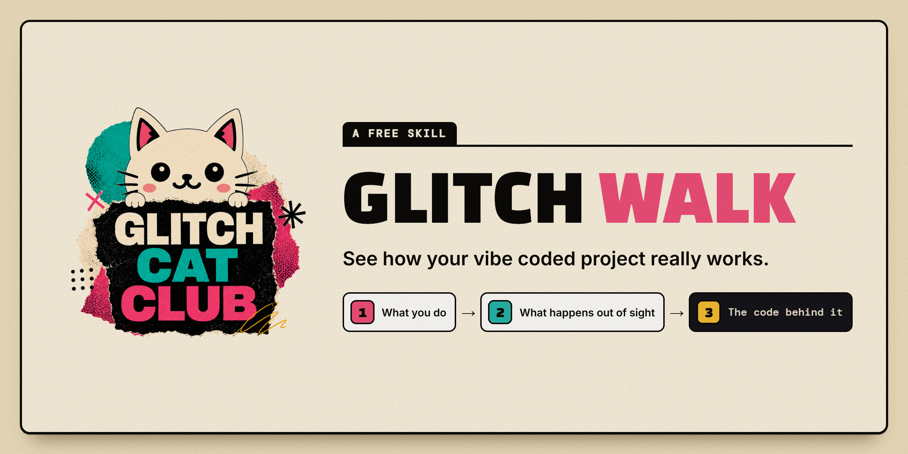
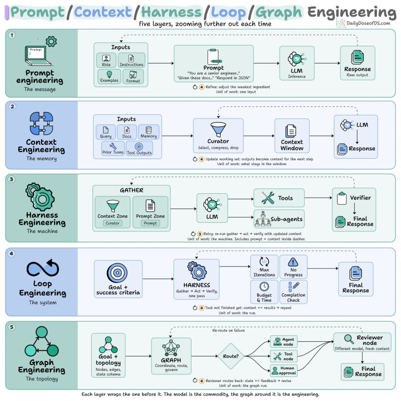

AI Skills Playbook
Distilled talks, posts and docs on AI engineering — agents, context economics, memory, evals and tooling. Every entry keeps its thesis, key points and sources.
Latest additions
Talk Notes: "From Your Laptop to the Pipeline: Scaling Custom Agents with GitHub Copilot" — José Palafox, GitHubAI Engineer talks · todayAI Engineer Talks — World's Fair 2026 (Sep 25 – Oct 10)AI Engineer talks · today01 — Claude Code & AgentsCategories · yesterday02 — Jev Context EconomicsCategories · yesterdayTools & Capabilities Inventory — instructions already in the playbookCategories · yesterdayThe Tokenomics PlaybookStart here · yesterday
Browse by section
AI Engineer talks
39 pages
37 talks from the AI Engineer World's Fair 2026, each distilled with a tokenomics angle.
Deep dives
19 pages
Long-form dossiers with mechanisms, numbers and local-deploy steps.
Storage & memory maps
3 pages
What's local vs cloud, in the bensimon.dev visual language.
Categories
10 pages
Distilled Instagram reels and X bookmarks, organized by topic.
GitHub Repos
1 pages
36 open-source repos scored /10 on his tokenomics remit — routing, RAG, memory, evals.
From the visual index all →
 Talk Notes: "Beating RL With Reflection: GEPA and Optimize Anything" — Lakshya A. Agrawal, GEPA
Talk Notes: "Beating RL With Reflection: GEPA and Optimize Anything" — Lakshya A. Agrawal, GEPA Talk Notes: "Stop Rationing Tokens: Let the Harness Pick the Model" — Žilvinas Urbonas & Laurent Gil, Cast AI
Talk Notes: "Stop Rationing Tokens: Let the Harness Pick the Model" — Žilvinas Urbonas & Laurent Gil, Cast AI Anatomy of an Agent Harness — the eight boxes between a model and a merged PR
Anatomy of an Agent Harness — the eight boxes between a model and a merged PR
Glitch Walk — what you do, what happens out of sight, the code behind it
Prompt, Context, Harness, Loop, Graph Engineering — five layers, zooming further out each time Composio MCP gateway hero
Composio MCP gateway heroFull index
Start here 3
AI Engineer talks 39
- AI Engineer Talks — World's Fair 2026 (Sep 25 – Oct 10)
- Talk Notes: "AI-Generated Code Is Already Competing With Human Code" — Daksh Gupta, Greptile
- Talk Notes: "An AI Research Agent That Runs Your Experiments" — Tim Sweeney, Weights & Biases
- Talk Notes: "An Interaction Is All You Need" — Ivan Leo, Google DeepMind
- Talk Notes: "Autoresearch Made Our Models 3x Faster" — Tejas Bhakta, Morph
- Talk Notes: "Beating RL With Reflection: GEPA and Optimize Anything" — Lakshya A. Agrawal, GEPA
- Talk Notes: "Building Self-Improving Agent Software Factories" — Suraj Gupta, Warp
- Talk Notes: "Fixing the PR Bottleneck" — Matt Pocock, AIHero
- Talk Notes: "From Your Laptop to the Pipeline: Scaling Custom Agents with GitHub Copilot" — José Palafox, GitHub
- Talk Notes: "GLM-5.2: Open Weights, Near-Frontier Intelligence" — Zixuan Li, Z.ai
- Talk Notes: "GPU Died. Training Didn't: Self-Healing Training at Scale" — Connor Guerrero & Young Jeong, Crusoe
- Talk Notes: "Get Out of the Model's Way" — Kevin Hou, Google Antigravity
- Talk Notes: "How VS Code Went from Monthly to Weekly Releases with AI" — Harald Kirschner
- Talk Notes: "How We Built an Agent That Improves Itself" — Zubin Aysola, Weights & Biases
- Talk Notes: "I Built a Personal AI Agent on a Raspberry Pi" — Jeremy Adams, Neo4j
- Talk Notes: "I Turned Coding Agents Into a Strategy Game" — Ido Salomon, AgentCraft
- Talk Notes: "Lessons from Generating 12 Trillion Synthetic Tokens" — Bogdan Gaza, DatologyAI
- Talk Notes: "Long-Horizon Agents Need Experiments, Not Just Prompts" — Erina Karati, Supercell
- Talk Notes: "MCP Doesn't Suck. Your Agent Does." — Jan Čurn, Apify
- Talk Notes: "No, That's Not a Software Factory" — Ryan Cooke, WorkOS
- Talk Notes: "Orchestras, Not Factories: How the Fastest Builders Work" — Charlie Holtz, Conductor
- Talk Notes: "Scale the Judgment, Not the Model" — Andrew Orobator, Reddit
- Talk Notes: "Stop Fine-Tuning to Fix Retrieval Problems" — Anant Srivastava
- Talk Notes: "Stop Rationing Tokens: Let the Harness Pick the Model" — Žilvinas Urbonas & Laurent Gil, Cast AI
- Talk Notes: "Stop Renting Your AI's Memory" — Dylan Couzon, Qdrant
- Talk Notes: "The 5 Levels of Self-Driving Production" — Eric Schwartz, Traversal
- Talk Notes: "The Chief AI Officer: Scientist, Architect, Coach" — Rania Khalaf, WSO2
- Talk Notes: "The Death of the Code Review: What the Data Actually Says" — Laurie Voss, Arize AI
- Talk Notes: "The Loop Is the Product" — Roland Gavrilescu, Introspection
- Talk Notes: "The State of AI in Software Development: Data from 400+ Orgs" — Justin Reock, DX
- Talk Notes: "We Let Claude Code and Codex Race Human Researchers" — Elie Bakouch, Prime Intellect
- Talk Notes: "What It Actually Takes to Build a Software Factory" — Tereza Tížková, Factory
- Talk Notes: "What Makes Open Models Fast in Production" — Sujee Maniyam, Nebius
- Talk Notes: "Why 99% Accurate Browser Agents Still Fail" — Derek Meegan, Browserbase
- Talk Notes: "Why AI Didn't Actually Make You Ship Faster" — Gabriel Spencer-Harper, Meticulous
- Talk Notes: "YOLO Mode, Safely: MicroVM Sandboxes for Any Agent" — Rowan Christmas, Docker
- Talk Notes: "Your Agents Are in Solitary Confinement: Why MCP & A2A Aren't Enough" — Vlad Luzin, Band
- Talk Notes: "Your Coding Agent Is 6 Months Out of Date" — Jakub Hojsan, Exa
- Talk Notes: "Your LLM App Returned 200 OK. It Was Still Wrong." — Marina Petzel, Datadog
Deep dives 19
- Anthropic: Reducing cost and improving performance with Claude Platform
- Context Language Models: the model edits its own memory
- Deep Dive: "Dashboards Are Dead" — Sarah Simionescu, Composio
- Dell AI Data Platform — semantic layer + knowledge graph as token-cost control
- GitHub: How we make AI coding more cost efficient
- Jev model router for Claude Code
- Jev: Myth vs Reality — "200x faster, 400x cheaper"
- RTX Spark keynote (Oct 7, 2026) — official pricing, what fits in 128GB, and the local-vs-metered math
- Reflection Beam — open-weight MoE at 3–4x less inference compute
- Scribe's Digital Transformation Survival Guide: the context layer is the whole game
- Spotify's shunt — routing agent I/O to cheap models
- Tangle — Shopify's open-source experimentation platform
- The Jev thesis — TypeSafe's System One Models
- Tokenomics Deep Dive: what AI-assisted engineering actually costs, and how to cut it
- Uber: Running a Software Factory Efficiently at Uber Scale
- Unreal Agent — async-first agent harness
- WikiSkill — Google's persistent memory for agents: the wiki that never resets, the skills that get gated
- jevgrep — Jev-powered code research CLI
- show-me — the visual-explanation skill
Storage & memory maps 3
- GitHub Copilot Storage/Memory Map: What's Local, What's Cloud
- Updated Claude Storage/Memory Map: What's Local, What's Cloud, What Changes Oct 6
- VS Code Storage/Memory Map: What's Local, What's Cloud
Categories 10
- 01 — Claude Code & Agents
- 02 — Jev Context Economics
- 03 — Agent Memory
- 04 — Automation
- 05 — Prompts & Evals
- 06 — Design & Vibe Coding
- 07 — AI News
- 08 — Tools & APIs
- 09 — Learn
- Tools & Capabilities Inventory — instructions already in the playbook